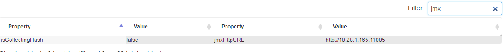
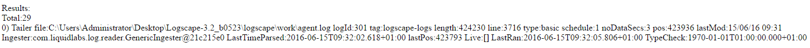
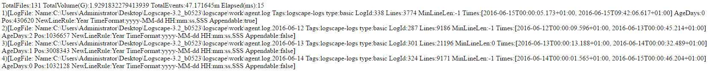

The troubleshooting series aims to help you diagnose problems within your environments, this guide aims to help you diagnose a scenario whereby data is not appearing in your environment. Diagnosis will begin on your forwarding agents and then move to your Indexstore/Management agents.
It sounds simple, but it happens to everyone, compare the files you are interested in, with your search parameters, is the time window large enough to include last time the file was active?
Solution - Expand your search Window.The easiest way to check if your file is being tailed is to utilize the JMX page of your forwarder. The easiest way to find the JMX url is to simply highlight the forwarder in question on the agents page, and filter the results by JMX.
From here, visit the JMX page, by default the credentials are username:sysadmin, password:ll4bs. Once the page has loaded select Service=Indexer
The function you are interested in is ListTailers, enter your file name as an argument, and then press the ListTailers button, you should see output similar to the following.Take note of the LastTimeParsed value, as we'll be using it later.
File not displayed? If your file isn't displaying the most common suspect is simply that their is no datasource set up for your data.Again on the JMX page of forwarder, this time we're going to check whether the file is indexed. Instead of using the listTailers function this time we're going to use the IndexedFiles function. In the same way you did for listTailers provide the filename you are interested in as your argument, and then click the IndexedFiles button, your output should look like the following.
The most interesting fields here are age, and Times. Age simply tells you in days, how old the file is, while Times is the time window the Index exists between, check the second value in the times field, does it match with the LastTimeParsed from the tailer?
My last time parsed doesnt match my time field - If your lastTimeParsed field is up to date, but your times field is behind, and remains behind for a protracted period of time, it is likely your index has somehow become corrupt. Simply reindexing the datasource should rectify any problems.If you have got this far, then your issue may lie on your Indexstore/Manager, repeat the above troubleshooting steps, instead utilizing the JMX URL of the host wheree your data is stored.
The following is that the process that all data within your environment goes through in order to become searchable.